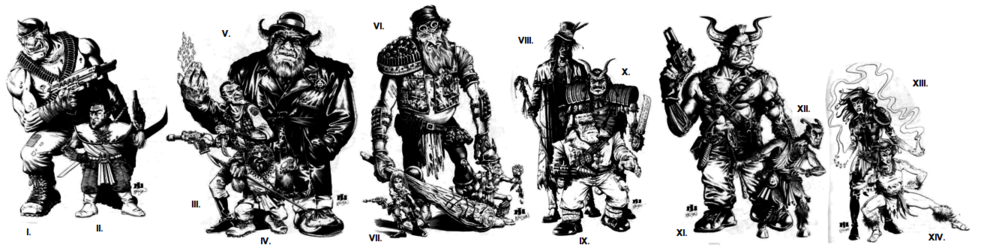

HOME RACES MAGETYPES SPELLS ATTRIBUTES SKILLS CHARGEN

Cyclops I , Koborokuru II , Hobgoblin III , Menehune IV , Fomori V , Giant VI , Gnome VII , Wakyambi VIII , Ogre IX , Oni X , Minotaur XI , Satyr XII , Night ones XIII , Dryad XIV
One of the primary aspects that permeates the Shadowrun theme are the many different races which walk the face of the earth. There are five major branches of metahumanity in the Shadowrun world: Humans (homo sapiens sapiens), Elves (homo sapiens nobilis), Dwarves (homo sapiens pulmillonis), Orks (homo sapiens robustus) and Trolls (homo sapiens ingentis). Everyone's familiar with humans - they're the same people that populate our real world. The other races - called "metahumans" - came into being beginning in 2011 (elves and dwarves) or 2021 (orks and trolls). According to Shadowrun canon (but not well-known to anyone ICly), during the Fourth World, many races existed. Some of them, when the magic of that world faded, became latent in the auras (and genetics) of humanity, which was the only race capable of surviving in a low-magic world (with the exception of a few, very powerful, immortal elves). When the mana levels started rising at the beginning of the Sixth World in 2011, human parents began giving birth to elven and dwarven babies in a phenomenon known as Unexplained Genetic Expression, or UGE. Ten years later, on April 30, 2021, some human children "goblinized", changing, often during puberty or in stressful situations, into Orks and Trolls. These goblinizations were very painful and traumatic.
Since that time, there are still some elves and dwarves born to pairs of human parents. Goblinization is all but unheard of in the modern world, as well, happening only extremely rarely. Most metahumans these days are born to other metahumans, although occasionally metahuman couples can have human babies, and vice-versa. It is important to note that Elves and Dwarves are born that way, and Orks and Trolls (and their metatype variations) are the only races who goblinize. All races, except for Humans, have variant metatypes (metavariants) that occasionally and very rarely express.
Dwarves tend to have the opposite problem from Trolls: where the world is too small for Trolls, it tends to be over-sized for dwarves. Your average dwarf stands 1.2 meters in height (compared to the average human's 1.7 meters) and weighs in at about 54 kg. Their skin color ranges from pinkish-white to ebony, and they live to more than 100 years of age on average. While shorter than other metahumans, they have shorter legs in proportion to their torsos than other races, which means they're not that much shorter than humans from waist to neck.
Folks who were called dwarves or midgets before the Awakening had limbs that didn't grow in proportion to their torsos, but they weren't the same dwarf race that we know today. Many folks see dwarves as children, or as figures akin to old fairy tales, which is inaccurate and causes them problems in social interactions.
People often underestimate dwarves due to their size, which often works to their benefit in some situations. Dwarves also have a reputation for technical excellence that is somewhat unfounded as well, since it has nothing to do with their race. Dwarves never goblinize, like trolls and orks—they are always born dwarves, either to dwarven parents or (more rarely) to human or other metavariant parents.
Racial Boni: +1 Body, +2 Strength, +1 Willpower, Thermographic Vision, Resistance (+2 Body) to any disease or toxin.
Racial Mali: x2 Running Multiplier
Members of the gnome subgroup appear in Central Europe or Asia or those descended from folks from that area. They are distinguished from other dwarves by their longer noses and shorter, more childlike physiques. Gnomes tend to favor rural environments over urban settings. Most cling to the behaviors traditionally attributed to their race by mythology and seem unnerved by modern technology. All known magical gnomes are shamans.
Racial Boni: as Dwarfs except: +2 Willpower
Racial Mali: as Dwarfs
The menehune, or Children of the Land, are named for the original "little people" of Hawai'i. Menehune are shorter than most dwarves and possess luxuriant body hair, thick muscles, large noses, bushy eyebrows, and stringy hair. According to local legends, the menehune's ancestors came from the lost continent of Mu, or Atlantis, but modern biologists and anthropologists place little stock in such fables.
Racial Boni: as Dwarfs except: +2 Body
Racial Mali: as Dwarfs
Japanese-descent dwarves, called koborokuru, are slightly smaller than their Western counterparts and possess extensive body hair. Like other metahumans, koborokuru are not looked upon kindly in Japanese society. In fact, Japanese anti-metahuman prejudice has saddled koborokuru with an undeserved reputation as rude and primitive individuals. Like gnomes, koborokuru prefer rural and wilderness areas over urban environments.
Racial Boni: as Dwarfs except: x3 Running Multiplier
Racial Mali: None
Many people, especially those of other metahuman races, view elves as the most fortunate metahumans. So pretty, so glamorous. Some humans try to borrow that glamour by pretending to be elves—it would never cross their minds to imitate orks or trolls. Elves even have their own nations! It must be so exciting to be one! This is, of course, their stereotype, and as with many stereotypes, it's often wrong.
There are poor elves, ugly elves, and boring, everyday elves. Being poor or socially handicapped is hard on anyone, but it's even worse for elves because it violates everyone's expectations. Elves are often prejudiced against at the opposite extreme from orks: they're cushioned, treated like ethereal lovely creatures that don't touch the ground. Others see elves as haughty, arrogant, and above it all, a prejudice born of the way that the elven nations of Tir Tairngere and Tir na nOg have developed and treated people.
Elves are the only race to have their own language that is known, Sperethiel. Not all elves, nor even MOST elves, SPEAK Sperethiel. Primarily, it's only found amongst elves from Tir Tairngere, and is a very young language as well. Elves stand 1.9 meters tall on average, weigh 72 kg on average, and have a skin color that ranges from pinkish-white to ebony. Their lifespan is estimated at several hundred years.
Racial Bonuses: +1 Quickness, +2 Charisma, Low-light vision
Racial Mali: None
The wakyambi are an extremely rare elven subgroup native to Africa. The wakyambi often lack pointed ears and are noticably thinner and taller than other elves, many growing as tall as trolls and a rare few even taller. Wakyambi almost always possess black or brown skin, though rare albino wakyambi are known to exist, characterized by white skin, no body hair, and red eyes. All known albino wakyambi shun the modern world and live deep within the jungles of Africa. Numerous African legends refer to a group known as the Heaven People that has given many gifts to humans over the millennia, for their own mysterious reasons. These legends describe the Heaven People as closely resembling the wakyambi. Seeking to gain the prestige, reverence, and other benefits accorded the Wakyambi, some non-wakyambi African elves claim to be members of the Heaven People, but no true wakyambi ever makes such a claim.
Racial Boni: as Elves except: +0 Quickness, +1 Willpower
Racial Mali: None
A mostly European-descent metavariant of elves known by their own choice as the Night Ones, possesses the distinguishing physical characteristic of fine fur covering their bodies. This layer of fur is indistinguishable from skin at a distance, but the fact that the fur ranges in color from black to violet to blue, with some very rare examples of green and very deep orange, makes this metavariant quickly apparent at close range. The Night Ones' hair and eyes are usually a tint of their skin color, though a few rare Night Ones have silver hair and eyes. Because the most common colors of fur are the dark shades, the general public almost immediately dubbed these elves the Dark Elves. Despite popular urban myth, however, the Night Ones are not a cult or an "evil" elven subgroup. Found mainly in Europe, an increasing number of Night Ones have been appearing in the Tir nations. Night Ones have a mild allergy to sunlight, and so prefer to live and work at night, but otherwise they resemble other elves.
Racial Boni: as Elves except: +2 Quickness
Racial Mali: Mild allergy to sunlight
Dryads are an all-female metavariant of elves characterized by an average height of just more than 1 meter and hair color that appears to change with the seasons of the areas in which they live (for example, brown or white in winter months, bright green in the summer and various oranges, reds and yellows in the autumn months). All dryads have dark brown eyes with no visible pupils. No matter where they are born, all dryads migrate to forested or wooded areas as soon as they are capable of travelling on their own—the further away from the urban sprawl, the better. The longer they live in these isolated areas, the more feral they become. in a voluntary separation from society that includes speaking a language that only other dryads understand. All known dryads are shamans who follow a variant of the Great Mother totem. The dryads call their totem Father Tree.
Racial Boni: as Elves except: +3 Charisma, limited Animal Empathy
Racial Mali: -1 Body, -1 Strength
In the Shadowrun universe, humans are the most populous race. They tend to be the baseline for comparison when it comes to other races. They come in about as many varieties as you'd expect. One thing that's important to note is that while it does exist, "traditional" human racism - black vs. white vs. yellow - is not as widespread or as common as it once was. Most racists save their ire for metahumans. Humans also have the dubious honor of having the largest number of racists amongst their metatype.
Racial Boni: None.
Racial Mali: None.
Orks are the most numerous and least respected metahuman race. Larger than humans and heavier than elves, they tend to be feared because of their size. Orks have a lot of multiple births, and they are the fastest-growing population in the world. Orks are rampantly discriminated against, viewed as stupid by many folks, and called "tuskers" as a usual slang term referring to their tusks.
The ork's average height and weight is 1.9 meters and 95 kg. Skin color ranges from pale pink to ebony, and the Orkish lifespan runs from 35-40 years. By and large, they live in large communal groups and have an intense pride in their racial identity. There are a lot of criminals (and thus a lot of shadowrunners) amongst the Orks due to the intense discrimination they face.
Racial Boni: Low Light Vision, +3 Body, +2 Strength.
Racial Mali: -1 Charisma, -1 Intelligence.
Hobgoblins are Middle Eastern variants on the Ork race. They're smaller and slighter than most orks, and have greenish skin tones, sharp teeth and dark eyes that give them a fierce appearance. They are distinguished by their vicious tempers and strong sense of personal honor, which demands that they avenge any slight or disrespect directed towards them.
Racial Boni: as Orks except: +2 Strength
Racial Mali: as Orks except: no Intelligence penalty
Japanese Orks, or Oni, have bright red, blue, or orange skin. Less apparent physical characteristics include slightly protuberant eyes; enlarged, pointed ears; and horns. Additionally, oni display a higher-than-average propensity for magical ability. They are looked upon by the Japanese as treacherous and hostile, most often, but this is a racist viewpoint more than a reality.
Racial Boni: as Orks except: +2 Body, +1 Willpower
Racial Mali: as Orks
Members of the European ogre subgroup are shorter and stockier than most orks. They possess smoother skin and less body and head hair than other orks, as well as pronounced jawlines.
Racial Boni: as Orks except: no low-light vision
Racial Mali: as Orks except: no Charisma penalty
Members of the Mediterranean satyr subgroup often possess relatively small physical builds, furry lower bodies, cloven hooves, and small curly horns. Popular myth to the contrary, not all satyrs are musicians or party animals. Nearly all satyrs possess magical abilities and follow the way of the shaman, and most follow the totem of Bacchus.
Racial Boni: as Orks except: +1 Willpower, x4 Running multiplier
Racial Mali: as Orks except: -1 Quickness
Trolls are the largest metatype, and because of their immense physical size and strength they're often taken for being stupider than orks. Centuries of comedy in which the clever little weakling outsmarts the big, strong guy have primed people to have low expectations of trolls. Also, trolls have tusks, like orks, and their other teeth are shaped differently, which leads to speech that sounds flat, uninflected and "stupid" to others. Trolls often find everyday life uncomfortable: most things are built for much smaller people, they don't fit in small cars or compartments in coffin hotels; chairs don't fit them, and sometimes, troll children can't even go to local schools.
Most people's reaction, socially, to trolls, is "Please don't beat me up!" Trolls, however, are rarer than most other races and thus aren't as often the targets of the same amount of bigotry that orks and elves are subjected to—though they are by far not immune. Most trolls tend to live in wilderness areas as well, since there's a lot more room there, and a lot less problems with urban areas and size. However, urban trolls do exist, and are often found in 'muscle' jobs, leveraging their size and strength to their own benefits. Trolls are, on average, 2.8 meters tall, weigh 225 kg, have skin that ranges from pinkish-white to brown and an average lifespan of 50 years. Their skin is often rough and covered with dermal deposits due to their natural dermal armor.
Racial Boni: +5 Body, +4 Strength, Thermographic Vision, +1 Reach for Armed/Unarmed Combat, Dermal Armor (+1 Body)
Racial Mali: -1 Quickness, -2 Intelligence, -2 Charisma.
Greek and Mediterranean trolls sometimes express as cyclops. Cyclops are often larger and more heavily muscled than other trolls, and lack the obvious dermal deposits covering their skin, but are most easily distinguished by the fact that they have only a single eye located in the middle of their foreheads. All cyclops have only one horn or, in rare instances, no horns.
Racial Boni: as Trolls except: no Dermal Armor, +6 Strength, no Thermographic Vision
Racial Mali: as Trolls except: +2 target modifier for depth perception
Fomori, often of Irish/Celtic descent, lack dermal bone deposits and are generally considered comparatively attractive by other races. Like many metahumans of Celtic descent, fomori possess a higher-than-average propensity for magical ability.
Racial Boni: as Trolls except: +4 Body, +3 Strength, no Dermal Armor
Racial Mali: as Trolls except: no Charisma penalty
Nordic-descent trolls, or Giants, are fairer and taller than other trolls. The average Giant stands 3.5 meters tall and most lack horns and the dermal bone deposits common to their race. For as-yet-unknown reasons, giants seem to have a greater-than-average tendency towards genetic reversions - one out of every four female infants born to giant mothers is human (homo sapiens sapiens).
Racial Boni: as Trolls except: +5 Strength, no Dermal Armor
Racial Mali: as Trolls
Minotaurs are an unusual Mediterranean-descent variant of the troll metatype, distinguished by pronounced snouts in place of noses, wide-set eyes, long horns, and body fur.
Racial Boni: as Trolls except: +4 Body, +3 Strength
Racial Mali: as Trolls except: -1 Charisma, -1 Intelligence